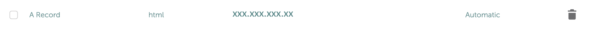
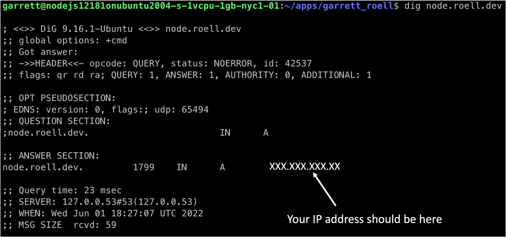
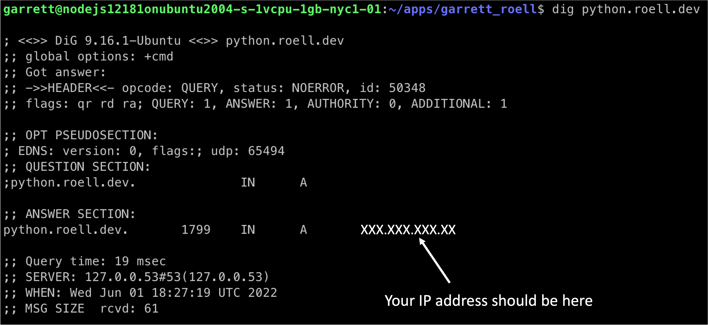
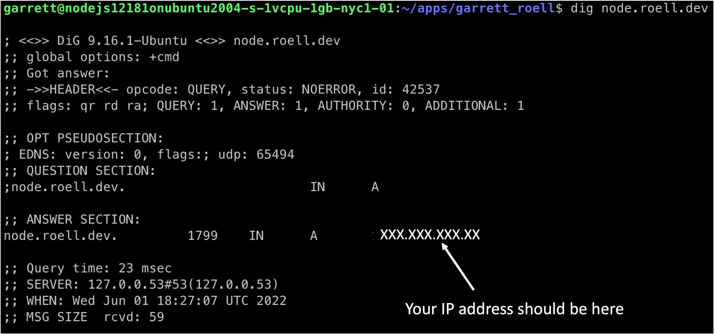
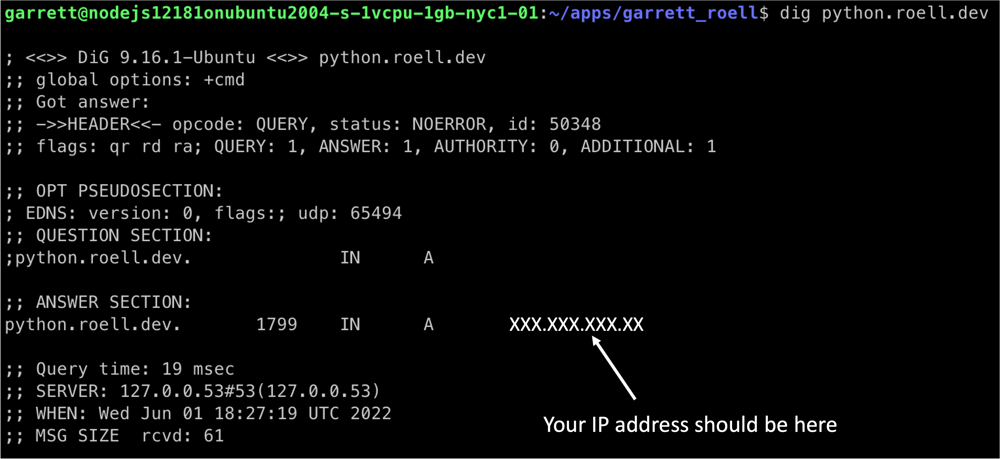

How to host 10+ sites for $5 per month
This is not an advertisement. It is an endorsement of a product that I like.
This guide explains how I set up Nginx on a DigitalOcean droplet to host 10+ websites for $5 a month. The guide will go over the steps required to host the following types of websites:
You will need at least one custom domain name to complete this tutorial. Subdomains can be used to host each project at its own url.
Step 1. Create a DigitalOcean account
Step 2. Create a droplet
Create your droplet using the create button on the top navigation bar. A droplet is linux virtual machine with its own IP address. Choose the $5 option which comes with 1GB Memory / 25GB Storage / 1TB Bandwidth. Select the following options:
- Ubuntu 20.04 (LTS) x64
- Basic shared CPU plan
- Regular with SSD CPU ($5/month)
- Pick a datacenter (I chose New York 1)
Say no to the options that try to upsell you.
Create a root password to allow you to access your server, and skip ssh setup.
Step 3. Set up server
Find your server's public IP address on the DigitalOcean dashboard. Remotely access your server using a command line tool (On mac I recommend iTerm2)
$ ssh root@your_server_ip
The root user can make destructive changes. To avoid accidents, it is best practice to use a non root account. Create a non-root user (use your name instead of mine) with a strong password, and skip all other questions.
$ adduser garrett
Grant administrative privileges. This command appends (-a) the user, garrett, to the group (-G) sudo.
$ usermod -aG sudo garrett
Log out with the command 'exit', and confirm that you can access server with new user.
$ ssh garrett@your_server_ip
Step 4. Install Nginx
Nginx is a high performance web server and a reverse proxy server.
Update server
$ sudo apt-get update
Install nginx
$ sudo apt-get install nginx
Confirm that the server is running default Nginx page
http://server_domain_or_IP
If site is not loading, check that http traffic can pass through your server's firewall, and reload the page
$ sudo ufw allow http
Step 5. Download git repo with shell projects
This repo contains example projects for html, react, node, and python projects.
Make sure that you are in your home directory so the apps folder has the location /home/garrett/apps/.
$ cd ~
$ git clone https://github.com/garrettroell/droplet_set_up.git apps
Step 6. Choose the type of site you'd like to host
Step 7. Connect a domain name to your server
You will need a domain name to continue here. You can get one at Namecheap for about $10/year. In these examples I use roell.dev as my top level domain, and use it to host various subdomains. I'll use subdomains attached to roell.dev in this tutorial
Add an A record to connect your domain name to your server. Put '@' as the host if you want to use the top level domain, or put a string as the host to use a subdomain. The image below is the Namecheap interface, but other domain providers should have similar DNS configuration interfaces.
Confirm that the url is connected to your server.
$ dig html.roell.dev
$ dig react.roell.dev
$ dig node.roell.dev
$ dig python.roell.dev
 



If the domain is connected, you should see your server's ip address. It may take a few minutes for the DNS changes to propagate.
Step 8. Configure Nginx to host an HTML page
Inspect ~/apps/html folder
$ cd ~/apps/html
$ ls
Edit index.html to say your name. Exit the editor by pressing "command + x" and then "y" and then "enter."
$ nano index.html
Contents of the default index.html page
<html>
<head>
<title>Welcome to Garrett's html site</title>
</head>
<body>
<h1>Welcome to Garrett's html site!</h1>
</body>
</html>
Add an Nginx configuration file for the html site named html.roell.dev. Exit the editor by pressing "command + x" and then "y" and then "enter."
$ sudo nano /etc/nginx/sites-available/html.roell.dev
server {
listen 80;
server_name html.roell.dev;
root /home/garrett/apps/html/;
index index.html;
location / {
try_files $uri $uri/ =404;
}
}
Enable the config file by making a symbolic link.
$ sudo ln -s /etc/nginx/sites-available/html.roell.dev /etc/nginx/sites-enabled/
Check the Nginx configuration for syntax errors
$ sudo nginx -t
Restart Nginx
$ sudo systemctl restart nginx
Step 8. Configure Nginx to host a React App
Clone a repo with the react project
Create an example project
$ cd apps
$ mkdir html_site
Create a basic html file
$ cd html_site
$ nano index.html
<html>
<head>
<title>Welcome to Garrett’s html site</title>
</head>
<body>
<h1>Welcome to Garrett’s html site!</h1>
</body>
</html>
Add a configuration file for the html site (replace user and )
$ sudo nano /etc/nginx/sites-available/html_site
server {
listen 80;
listen [::]:80;
root /home/garrett/apps/html_site/index.html;
index index.html index.htm index.nginx-debian.html;
server_name html.roell.dev;
location / {
try_files $uri $uri/ =404; {
location / {
}
}
Enable the config file by making a symbolic link.
$ sudo ln -s /etc/nginx/sites-available/react.roell.dev /etc/nginx/sites-enabled/
Check Nginx files for syntax errors
$ sudo nginx -t
Restart Nginx
$ sudo systemctl restart nginx
Step 8. Configure Nginx to host a Node Server
Create apps folder
$ cd ~
$ mkdir apps
Create an example project
$ cd apps
$ mkdir html_site
Create a basic html file
$ cd html_site
$ nano index.html
<html>
<head>
<title>Welcome to Garrett’s html site</title>
</head>
<body>
<h1>Welcome to Garrett’s html site!</h1>
</body>
</html>
Add a configuration file for the html site (replace user and )
$ sudo nano /etc/nginx/sites-available/html_site
server {
listen 80;
listen [::]:80;
root /home/garrett/apps/html_site/index.html;
index index.html index.htm index.nginx-debian.html;
server_name html.roell.dev;
location / {
try_files $uri $uri/ =404; {
location / {
}
}
Enable the config file by making a symbolic link.
$ sudo ln -s /etc/nginx/sites-available/node.roell.dev /etc/nginx/sites-enabled/
Check Nginx files for syntax errors
$ sudo nginx -t
Restart Nginx
$ sudo systemctl restart nginx
Step 8. Configure Nginx to host a Python Server
Create apps folder
$ cd ~
$ mkdir apps
Create an example project
$ cd apps
$ mkdir html_site
Create a basic html file
$ cd html_site
$ nano index.html
<html>
<head>
<title>Welcome to Garrett’s html site</title>
</head>
<body>
<h1>Welcome to Garrett’s html site!</h1>
</body>
</html>
Add a configuration file for the html site (replace user and )
$ sudo nano /etc/nginx/sites-available/html_site
server {
listen 80;
listen [::]:80;
root /home/garrett/apps/html_site/index.html;
index index.html index.htm index.nginx-debian.html;
server_name html.roell.dev;
location / {
try_files $uri $uri/ =404; {
location / {
}
}
Enable the config file by making a symbolic link.
$ sudo ln -s /etc/nginx/sites-available/python.roell.dev /etc/nginx/sites-enabled/
Check Nginx files for syntax errors
$ sudo nginx -t
Restart Nginx
$ sudo systemctl restart nginx
Step 9. Add SSL with LetsEncrypt
Download certbot. This step only needs to happen once in the server's lifetime.
$ sudo apt install certbot python3-certbot-nginx
Add SSL for your domain
sudo certbot --nginx -d html.roell.dev
sudo certbot --nginx -d react.roell.dev
sudo certbot --nginx -d node.roell.dev
sudo certbot --nginx -d python.roell.dev
Confirm that the site is working
https://html.roell.dev
https://react.roell.dev
https://node.roell.dev
https://python.roell.dev